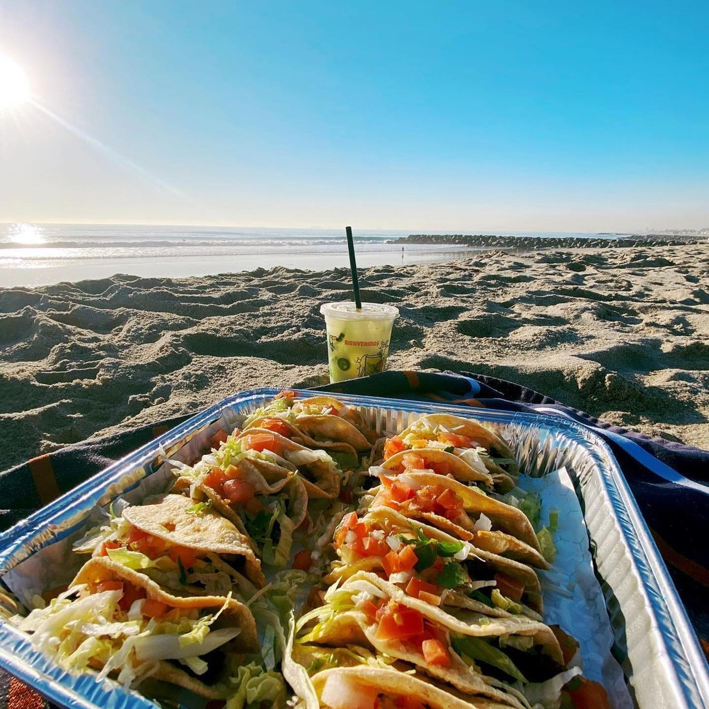
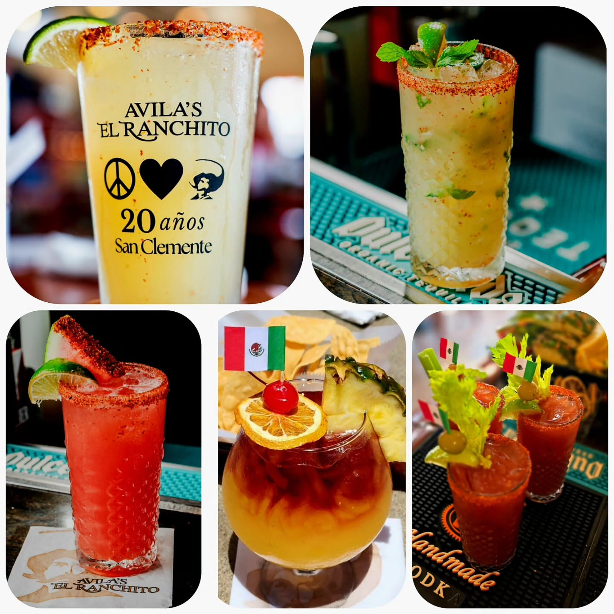
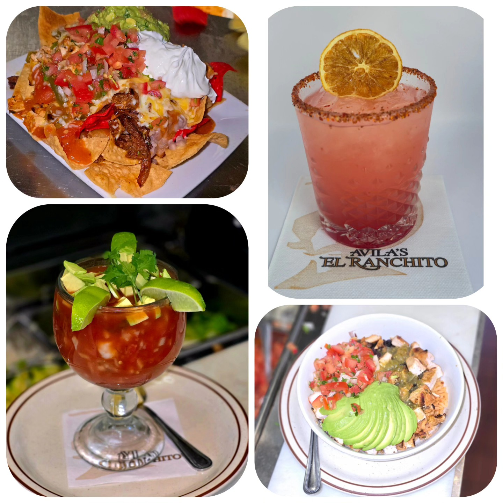
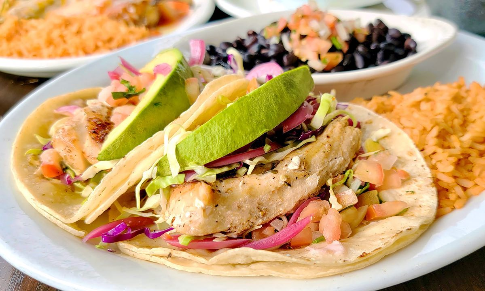
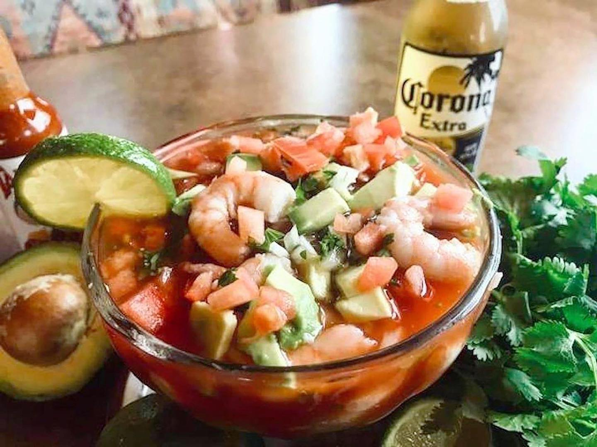
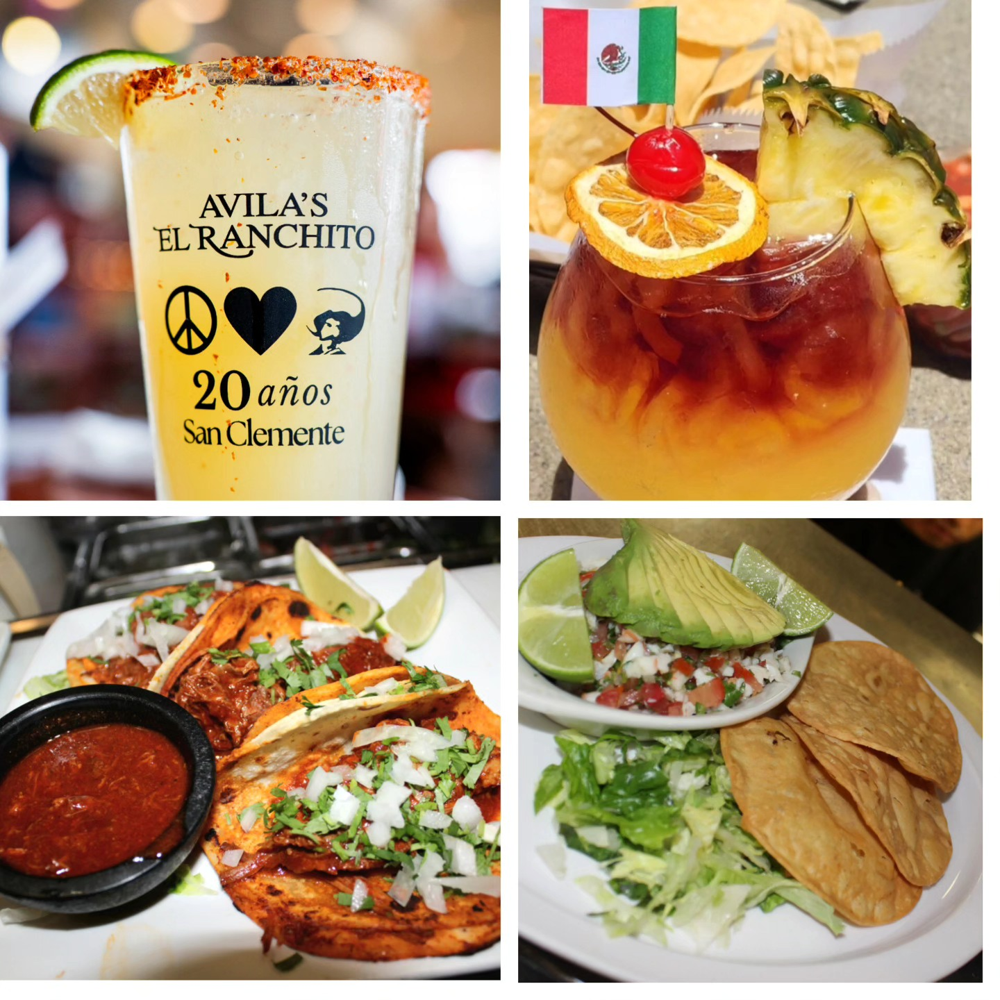
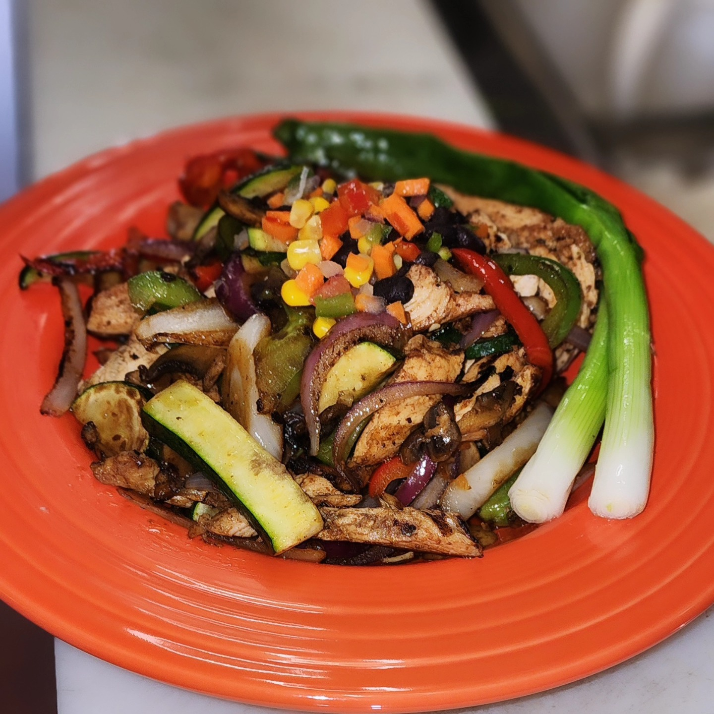
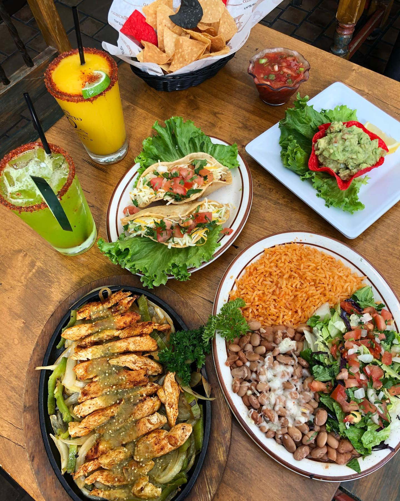
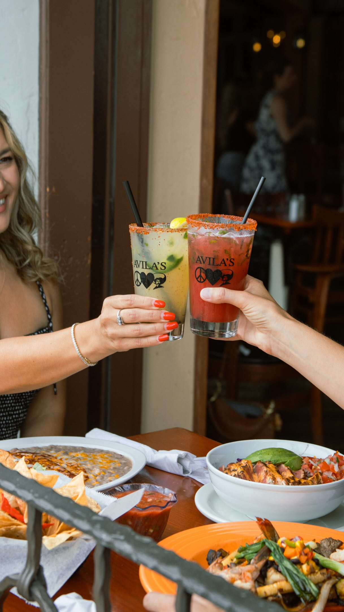
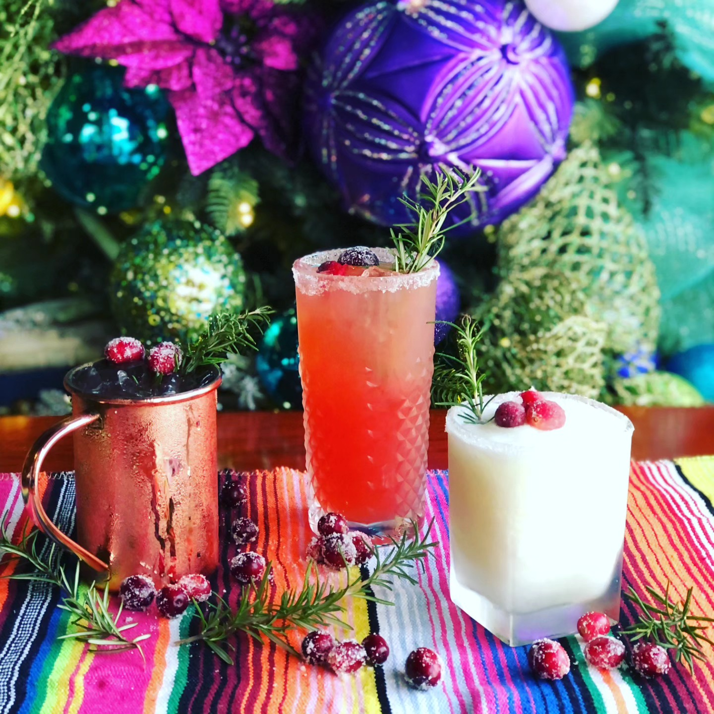

Guacamole Fresco
$16Avocado, tomato, cilantro, onion, garlic and lime; topped with shredded cheese.
Avila’s El Ranchito · San Clemente
Sopas y ensaladas
A bowl of Mamá’s soup, a crisp salad, or a little of both.

Chicken and rice soup with avocado, cilantro, onion, tomato and warm tortillas. Condiment plate with cheese, chips, avocado and jalapeños +$5.
Flour tortilla shell, lettuce, beans, shredded chicken or beef, or grilled chicken; pico de gallo, cheese, guacamole and sour cream.
Grilled chicken, cilantro-lime dressing, avocado, black beans, corn salsa and tortilla strips.
Chicken, lettuce, tomato, cheese and avocado. Barbecue style on request.
Shredded chicken or beef $19; grilled chicken or carnitas $20. Beans, lettuce, cheese, pico de gallo, guacamole and sour cream.
A bowl of Avila’s Soup and a green salad; tortillas on request.
Small soup and two crispy tacos, taquitos or chicken flautas. Guacamole or sour cream +$1 each.
Meatballs and vegetables with warm tortillas.
Available Saturday and Sunday only. Beef tripe soup with tortillas.
Para compartir
Generous platters, warm tortillas, and room for everyone to dig in.

Served with avocado, tomato, onion, jalapeños, pico de gallo, lemon and warm tortillas. Add Mexican rice and beans for $5.
Mazatlán shrimp in garlic butter.
Garlic-butter shrimp, pork and grilled chicken.
A tu gusto
Choose your favorites and make a plate of your own.

Includes Mexican rice and beans with melted cheese; frijoles frescos or black beans on request. Choose crispy taco, soft taco, flauta, taquito, enchilada, enchilada de tomatillo, chile relleno or tamale. Shrimp substitution +$4 per item for crispy tacos, soft tacos and either enchilada.
Choose one combination item.
Choose two combination items.
Two flautas or taquitos.
Todos a la mesa
Bring the family favorites to your next gathering.

From the restaurant’s linked catering-to-go PDF (April 2026). Call (949) 498-5000 to arrange an order; suggested servings are the restaurant’s estimates.
Suggested for 10: 10 chicken Chingolinga bites, 10 small beef tacos, 10 beef flautas and 10 bean-and-cheese burritos. Also includes guacamole, salsa and chips; see PDF for quantities.
Suggested for 15: 15 each of chicken Chingolinga bites, small beef tacos, beef flautas and bean-and-cheese burritos. Salsa, guacamole, rice, beans and chips included; see PDF for quantities.
Suggested for 10–15 as a side dish. Chicken, black beans, corn, peppers, tortilla strips and cilantro-lime dressing.
Shredded beef or chicken.
Bean and cheese $30; chicken and rice $32.
Chicken-filled flour tortilla bites.
Shredded beef or chicken.
Cheese, shredded beef or chicken; salsa roja, tomatillo or ranchera.
Suggested for 10.
Suggested for 10.
Suggested for 10.
Two dozen tortillas, a pint of guacamole, and cheese and pico de gallo. See PDF for full quantities.
Two dozen tortillas, a pint of guacamole, salsa negra, cilantro and onion. See PDF for full quantities.
8 oz $12; 16 oz $20.
8 oz $6; 16 oz $10.
16 oz $8; 32 oz $16. Beans: regular, black or whole pinto. Suggested servings: 16 oz for 2–4; 32 oz for 5–8.
Food for the table. Something bright in your glass. A little of our beach-town rhythm.










Photos from our Instagram archive. Tap a photograph to see the full original. Seasonal drinks and past presentations may differ from today’s offerings—please use the menu above for current selections. Videos connect to Instagram only when you choose to load the player.
Photography selected from the restaurant’s Instagram collection. Original post linked beneath each photo.